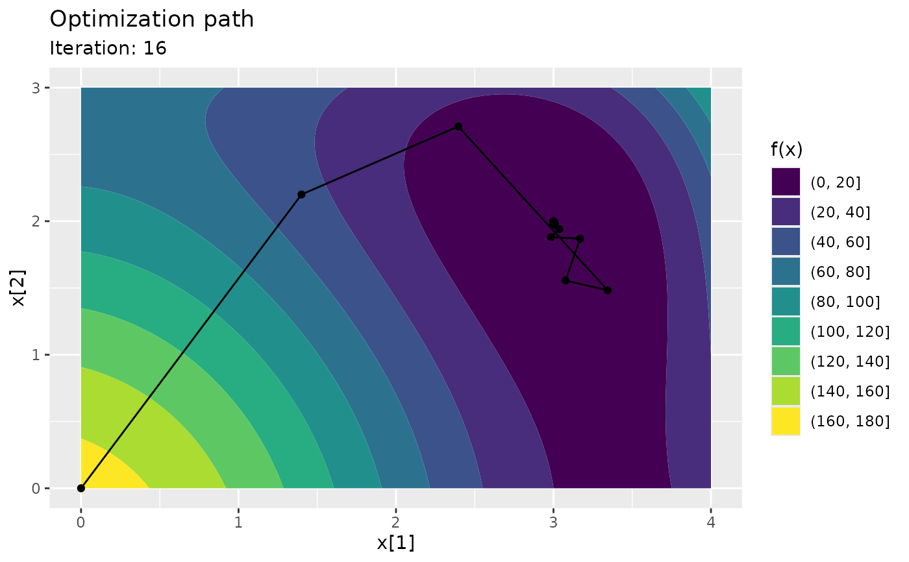

Track numerical optimization
Source:R/nlm_track.R, R/optim_track.R, R/trackopt_methods.R
nlm_track.RdUsage
nlm_track(
f,
p,
target = NULL,
npar = NULL,
gradient = NULL,
hessian = NULL,
...,
iterations_max = 100,
tolerance = 1e-06,
typsize = rep(1, length(p)),
fscale = 1,
ndigit = 12,
stepmax = max(1000 * sqrt(sum((p/typsize)^2)), 1000),
steptol = 1e-06,
minimize = TRUE,
verbose = FALSE
)
optim_track(
f,
p,
target = NULL,
npar = NULL,
gradient = NULL,
...,
iterations_max = 100,
tolerance = 1e-06,
lower = NULL,
upper = NULL,
method = c("Nelder-Mead", "BFGS", "CG", "L-BFGS-B", "SANN", "Brent"),
control = list(),
minimize = TRUE,
verbose = FALSE
)
# S3 method for class 'trackopt'
summary(object, ...)
# S3 method for class 'trackopt'
autoplot(object, iteration = NULL, xlim = NULL, xlim2 = NULL, ...)Arguments
- f
[
function]
Afunctionto be optimized, returning a singlenumericvalue.The first argument of
fshould be anumericof the same length asp, optionally followed by any other arguments specified by the...argument.If
fis to be optimized over an argument other than the first, or more than one argument, this has to be specified via thetargetargument.- p
[
numeric()]
The starting parameter values for the target argument(s).- target
[
character()|NULL]
The name(s) of the argument(s) over whichfgets optimized.This can only be
numericarguments.Can be
NULL(default), then it is the first argument off.- npar
[
integer()]
The length(s) of the target argument(s).Must be specified if more than two target arguments are specified via the
targetargument.Can be
NULLif there is only one target argument, in which casenparis set to belength(p).- gradient
[
function|NULL]
Optionally afunctionthat returns the gradient off.The function call of
gradientmust be identical tof.- hessian
[
function|NULL]
Optionally afunctionthat returns the Hessian off.The function call of
hessianmust be identical tof.- ...
Additional arguments to be passed to
f(andgradient,hessianif specified).- iterations_max
[
integer(1)]
The maximum number of iterations before termination.- tolerance
[
numeric(1)]
The minimum allowed absolute change in function value between two iterations before termination.- typsize, fscale, ndigit, stepmax, steptol
Arguments passed on to
nlm.- minimize
[
logical(1)]
Minimize?- verbose
[
logical(1)]
Print progress?- lower, upper
[
numeric()|NULL]
Optionally lower and upper parameter bounds.- method, control
Arguments passed on to
optim.Elements
traceandmaxitare ignored incontrol.- object
[
trackopt]
Atrackoptobject.- iteration
[
integer(1)]
The iteration to plot.If
NULL, the last iteration is plotted.This option is useful for creating animations, see https://bookdown.org/yihui/rmarkdown-cookbook/animation.html#ref-R-animation.
- xlim, xlim2
[
numeric(2)]
Ranges for the first and second parameter to plot.If
NULL, they are derived from the parameter ranges inobject.
Examples
himmelblau <- function(x) (x[1]^2 + x[2] - 11)^2 + (x[1] + x[2]^2 - 7)^2
track <- nlm_track(f = himmelblau, p = c(0, 0))
summary(track)
#> Iterations: 16
#> Function improvement: 170 -> 1.521e-07
#> Computation time: 0.04228 seconds
#> Initial parameter: 0, 0
#> Final parameter: 3, 2
ggplot2::autoplot(track)
